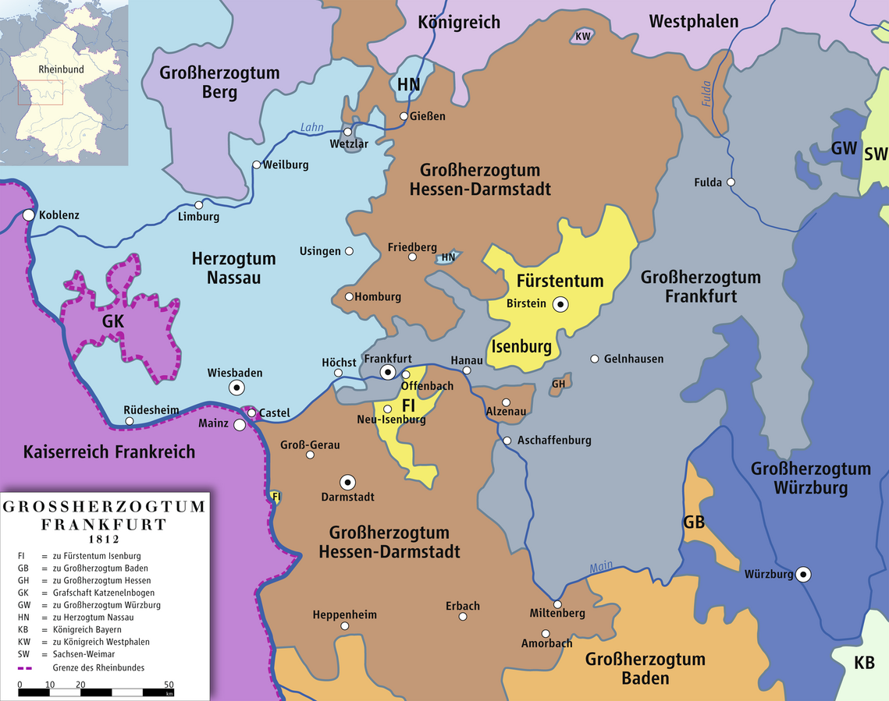
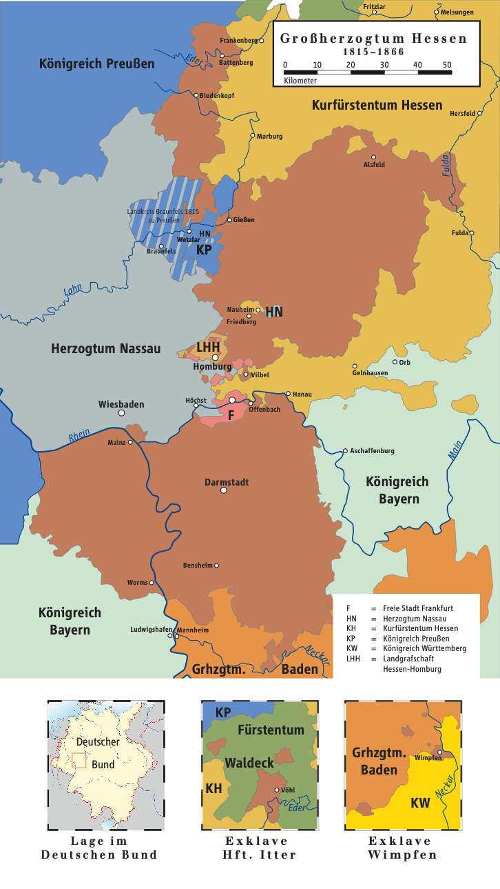

Ahoi :D
Doktor läuft gut soweit, danke der Nachfrage, die schwersten Probleme am ersten Paper sind ausgeräumt und wir tuckern langsam auf die Submission zu (forshadowing...).
Deswegen liebe Kinder, gibt es heute eine Geschichte über eine kleine Eisenbahn, die konnte!
***buuuuuuuhhh***
Wer war das? >:(
Also es war einmal in einem Bundesland, ähhh ne warte ma ... *räusper blätter blätter* Ah ja. Es war einmal in der Mitte des 19ten Jahrhunderts in einem Herzogtum in dem nichts lief. Dieses Herzogtum war das Großherzogtum Hessen und es lag, wie man vom Namen erwarten würde, in dem Rheinland Teil von Rheinland Pfalz, dem südhessischen Bergstraßenkorridor, und einer eher komischen Exklave rund um den Wetteraukreis und Gießen. Andere Teile Hessens gehörten zu den wesentlich erfolgreicheren nassauischen oder kurfürstlich hessischen Gebieten oder waren eben die freie Reichsstadt Frankfurt.

Quelle
QuelleIm Rhein Main Gebiet lief man, wie es so üblich war, mal wieder allen internationalen Trends überfordert hinterher und verpasste immer wieder die Marke, unter anderem wegen dieser geopolitischen Lage, eigentlich aber eher auf Grund von allgemeiner Zerrüttung nach den napoleonischen Kriegen. So war es also keine Überraschung das schon große Teile Europas und Deutschlands beschient waren, währrend man hier im Rhein-Main Gebiet immer noch in den Arsch des Pferdes schaute (im wahrsten Sinne des Wortes). Eine Reise von Darmstadt nach Mainz konnte dem entsprechend damals grob so aussehen: HIER GABELNDE WEGBESCHREIBUNG WAS DAMALS MÖGLICH WAR Doch wie kam es zu der geopolitischen Lage? HIER PLANUNGSPROBLEME Die Lage war also blöd... Doch das sollte sich bald ändern :D
Und wenn sie nicht ausgefallen ist, dann tuckert die HLB noch heute.
Quellen:{kind=link}
{kind=link}